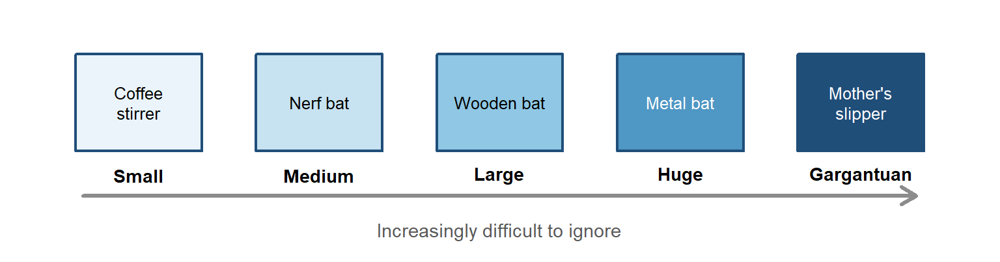
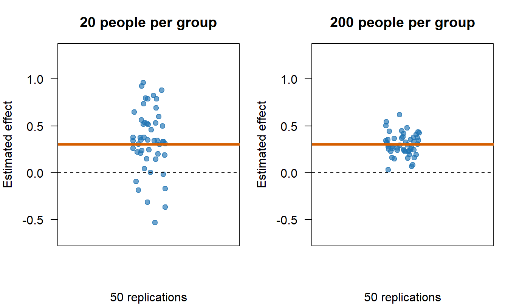
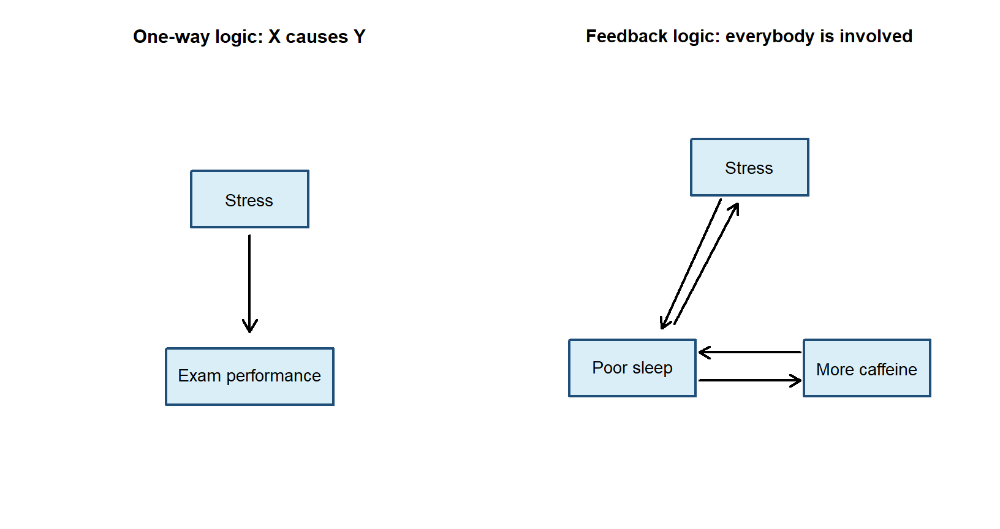
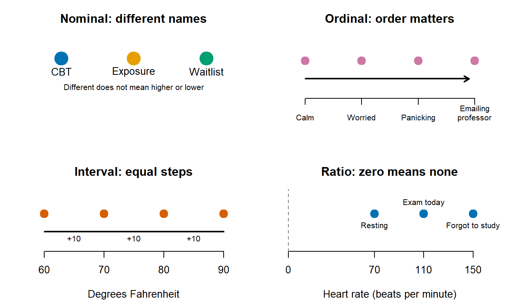
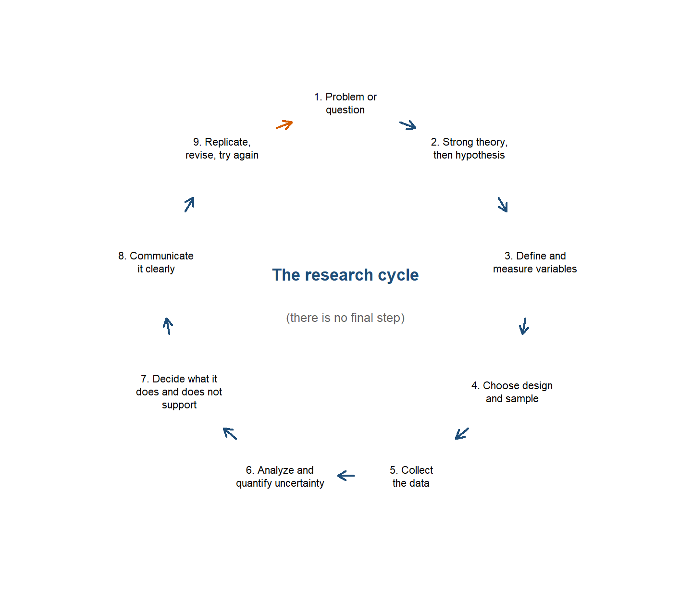

1 Why You Have to Learn Statistics (Sorry not sorry)
1.1 Why Should You Care?
You are taking a statistics class. I assume this was always your dream.
Maybe you woke up as a child, looked at the ceiling, and thought, One day I hope to calculate a standard error. More likely, you have to read this book because someone has blocked your graduation until you pass a statistics class. Either way, statistics matters because psychology runs on data, and data are messy!
Before we go any farther, here are three phrases researchers use constantly and explain approximately never:
- Statistically significant means something like, “This result probably, maybe did not happen just because chance was being weird.” That definition is deliberately incomplete. We will give it a real one in the one-sample t-test chapter, after you learn some probability theory and are emotionally prepared for it.
- An asterisk is the little star researchers sometimes put after a number to show that it was statistically significant: for example,
r=.32*. More stars may indicate smaller p-values, depending on the researchers’ chosen rules, but more does not mean better or “more better,” as I say constantly. Asterisks do not mean the effect is large, important, true, or blessed by the Statistics Gods. - An effect size asks how strong or large an effect is. Think of a small effect as being hit over the head with a coffee stirrer, a medium effect as a Nerf bat, a large effect as a wooden bat, and a huge effect as a metal bat. A gargantuan effect—a made-up but extremely technical term—is your mother hitting you over the head with her slipper or the hanger she happens to be holding. The effect is so devastating that you would have preferred to have taken the metal bat.
Statistics does four jobs for us:
| The Job | Psychological Example | Why You Care |
|---|---|---|
| Analyze and interpret data | Two thousand students answer a mental-health survey. | Statistics turns 2,000 separate cries for help into a pattern we can understand. |
| Make decisions | A therapy group improves more than a control group. | We need to decide whether the difference looks like a real effect or the kind of nonsense random samples produce. |
| Design research | We want to test whether sleep improves memory. | Statistics helps us choose the sample size, variables, comparisons, and analysis before we start throwing undergraduates at the problem. |
| Communicate findings | We found a relationship between stress and exam performance. | A graph, effect size, and confidence interval tell people how large and uncertain the result is. “Trust me, bro, it looked huge in Excel” does not cut it. |
These are not four separate activities. Your design determines the data you get. Your measurement determines what the numbers mean. Your analysis determines what claims are defensible. Then your graph determines whether anyone understands you before they wander away.
Statistics is therefore not the decorative math placed at the end of a study. It is part of the logic of the entire study.
Abelson called statistics a form of principled argument (Abelson 1995). The software will calculate whatever you ask it to calculate, including complete garbage. Your job is to build an argument in which the design, measurement, analysis, and conclusion are all talking about the same thing.
That argument usually asks whether chance is enough to explain what happened or whether we need some systematic explanation on top of it. Unfortunately, chance is fickle. Random data do not arrive evenly spaced, alphabetized, and wearing little name tags that say, “Hello, I am meaningless noise.” They form streaks, clusters, suspicious-looking differences, and occasionally an image of a saint on a piece of toast. Statistics helps us judge how much of that weirdness a reasonable chance process could produce.
Abelson argued that doing this well requires the combined skills of an honest lawyer, a detective, and a storyteller (Abelson 1995). The lawyer builds a defensible case. The detective looks for alternative explanations and evidence that does not fit. The storyteller explains why the comparison matters. The word honest is doing considerable work here. Statistics does not let us torture the data until they confess to whatever we hoped was true.
1.2 The Replication Crisis: Our Extremely Rude Wake-Up Call
A replication repeats a study to see whether the result appears again. If a finding is “real,” we should be able to find it more than once. Not every single time—chance is fickle—but often enough that the result becomes more trustworthy.
In 2015, the Open Science Collaboration repeated 100 published psychology studies. Ninety-seven of the original studies reported statistically significant results. Only 36 replications did, and the replication effects were, on average, about half the original effect size (Open Science Collaboration 2015). Psychology—well, mostly social psychology—responded with the scientific equivalent of waking up to find the house on fire and tried to do something about it. They are still sort of overcorrecting and have totally lost the forest for the trees, but we will love them for caring, as some other areas of psychology and neuroscience still think this is not a me problem.
This was not proof that 64% of psychology is fake. Replication is not a divine courtroom where one failed study gets to bang a tiny gavel from the Statistics Gods and declare a theory dead. The projects differed in methods, samples, measures, and statistical power. Still, the result was far worse than psychologists expected.
1.2.1 Why Results Fail to Replicate
The problem is partly misunderstanding statistics:
- Treating the null hypothesis as if it must be exactly true, even though tiny relationships are almost everywhere (Meehl 1978).
- Treating a p-value as the probability that the theory is wrong. It is not (Cohen 1994).
- Using small samples that can only detect cartoonishly large effects (Cohen 1992; Button et al. 2013).
- Ignoring effect sizes and power, then acting shocked when a weak study produces unstable results.
- Calculating post hoc power from the result we already observed, which mostly turns the p-value into a new number wearing a fake mustache (Hoenig and Heisey 2001).
- Publishing exciting positive results while null results live forever in someone’s forgotten
Final_Final_REAL_Results.docxfile (Ioannidis 2005).
The problem is also systemic. Journals want novelty. Universities want publications. Funders want breakthroughs. Nobody gets a parade for carefully discovering that the exciting effect is probably 0.08 instead of 0.80. Those incentives create publication bias and reward researchers for finding asterisks rather than finding the truth (Ioannidis 2012). You cannot personally repair every journal, university, and funding agency this semester. I checked, and maybe wrote, your syllabus. We do not have time.
But you can stop contributing avoidable statistical nonsense by learning how probability drives the stability of results.
For example, suppose you put 20 people in therapy. The Probability Gods might hand you 20 unusually cooperative people who respond beautifully. Or they might give you 20 people who hate your face, refuse to listen to anything you say, and make the treatment look useless. With 200 people, it becomes much harder for the Probability Gods to find enough people who all hate your face. The oddballs begin to balance one another out, so the estimated effects tend to cluster closer to the true effect. Probability is always fickle; it just has less room to wreck the study.

We can see from the graph that collecting more people makes our estimate more stable. Small samples can produce wildly inaccurate and unstable guesses because probability is fickle. What does probability is fickle mean? It means the Gods who govern probability decide whether to do helpful or unhelpful things because they feel like it or maybe they also don’t like your face.
1.2.2 This Still Affects Your Life in a Serious Way
The crisis did not end in 2015, and it is not confined to social-psychology trivia, as some psychologists still sadly believe.
| Field | What they redid | What happened |
|---|---|---|
| Preclinical cancer biology (Errington et al. 2021) | 50 experiments from 23 influential papers | Replicated effects were typically much smaller, with a median effect size 85% below the originals. |
| Brain-behavior imaging (Marek et al. 2022) | Brain-wide association studies | Below 500 people, replication rates ran around 5%. Stable associations often required thousands of participants. |
| COVID-era social claims (Marcoci et al. 2025) | 29 sufficiently powered replications | 19 succeeded (about 65%) — better than 2015, but different claims tested in different ways. |
Cancer studies help determine which treatments deserve more research. This is not an argument about whether people unconsciously prefer the color blue on Tuesdays. And when a headline announces that scientists found “the brain region for procrastination” after scanning 23 sophomores, perhaps continue procrastinating before sharing it.
There has also been real progress. Researchers preregister hypotheses and analysis plans, share data and code, conduct large multi-lab studies, and use Registered Reports, in which journals judge the question and method before knowing whether the result is exciting. More than 300 journals had adopted Registered Reports by 2024 (Nature Neuroscience 2024). A large preregistered national study of growth-mindset training, for example, found a small benefit for lower-achieving students and showed that the effect depended on the school context (Yeager et al. 2019). That is a much more useful conclusion than either “growth mindset fixes education” or “growth mindset is fake.”
The lesson is not that science is broken beyond repair. The lesson is that science can repair itself.
1.3 Do Not Just Apply Statistics Like a Monkey Hoping to Type Hamlet Perfectly by Chance
You could memorize a decision tree:
Two groups? Push the t-test button. Three groups? Push the ANOVA button. More variables? Panic, then push buttons until Reviewer 2 stops rejecting your paper.
That approach can generate output. It cannot tell you whether the output answers your question.
To use statistics responsibly, you need to understand why a method works, what assumptions it makes, what uncertainty it leaves behind, and what your design allows you to claim. A perfectly executed analysis of a badly measured variable is still a beautifully formatted mistake.
1.4 Paradigms and the Stories We Tell About Causes
Thomas Kuhn used paradigm to describe the shared assumptions that tell scientists what counts as a sensible question, acceptable evidence, and a reasonable explanation (Kuhn 1962). Most of the time, scientists work inside a paradigm without discussing it. Fish probably spend very little time defining water. Also, did you know there are no such things as fish? (Miller 2020)
Psychology usually relies on one-way causal logic: \(X \longrightarrow Y\)
Sleep affects memory. Stress affects grades. A treatment affects symptoms. This does not mean every relationship must be a straight line. It means our explanation has a direction: X does something to Y.
But human behavior also contains feedback. Stress disrupts sleep, poor sleep increases stress, both encourage caffeine, and caffeine returns at 2:00 a.m. to finish the job. In a dynamical-systems perspective, causes can be circular, reciprocal, and dependent on what the system was doing a moment ago. Asking “Which came first?” can be a stupid question when each variable keeps causing the other one.

I study systems like the second picture. Most statistics in this book will use the cleaner X-predicts-Y structure because that is how classical statistical models and most psychological research questions are organized. The dynamical-systems perspective does not make those statistics useless. It changes the questions I ask, the boundaries I place around an answer, and how suspicious I become when someone claims to have found the one true cause of a human behavior.
1.5 Measurement: Numbers Are Not Magic
Before analyzing a variable, we must decide what our numbers mean.
Stevens defined measurement broadly as assigning numbers to objects or events according to rules. He organized measurements into four scales (Stevens 1946):
| Scale | What the numbers tell us | Psychology example | A better example |
|---|---|---|---|
| Nominal | Different categories; no order | Therapy condition: CBT, exposure, or waitlist | Volcano A, B, or C into which an undergraduate is dropped |
| Ordinal | Categories have an order; gaps between categories may be unequal | Mild, moderate, or severe symptoms | How much the student regrets volunteering for “easy” extra credit |
| Interval | Equal differences are meaningful; zero is arbitrary | Temperature in the overheated laboratory | Years on a calendar counting down to when Reviewer 2 retires |
| Ratio | Equal differences plus a meaningful zero | Heart rate after a student realizes the exam is today and they forgot to study | Number of chainsaw-carrying research assistants chasing the participant: ideally zero |

That classification is useful, but Joel Michell points out a rather large problem: assigning a number does not prove that the attribute itself is quantitative (Michell 1997). I can assign you a student ID number. That does not mean a student with ID 800000 is twice as much student as someone with ID 400000.
NoteAdvanced: Do Our Numbers Even Measure Anything? (Michell’s Complaint)
Michell distinguishes two jobs. The instrumental task creates a procedure that produces numbers. The scientific task asks whether the attribute actually has the structure those numbers assume. Psychologists are often excellent at the first job and quietly assume the second one has been handled by someone else. Possibly an undergrad. Probably for extra credit.
This matters because psychological constructs are abstractions. Anxiety is not sitting inside the skull like a kidney waiting to be weighed. We infer it from behavior, self-report, physiology, and context. Those measurements may be useful without being perfect, but their meaning depends on the theory and the measurement process. Numbers do not rescue a vague construct. Sometimes they merely give the vagueness decimal places.
WarningThe Institutional Review Board has entered the chat
Undergraduates may volunteer for ordinary research or earn reasonable extra credit. We cannot dissect their brains, drop them into volcanoes to appease Dorkaos (Ancient Greek God of Statistics), or chase them with chainsaws to increase the relationship between fear and exercise. “The effect size would be enormous” is not an ethical argument, or so I am told.
1.6 Research Design: The Extremely Short Version
Here are the terms the rest of the book will use constantly. Do not memorize this table. Bookmark it. You will be back, and the forgetting is normal—I planned for it.
| Term | Meaning |
|---|---|
| Theory | An organized explanation of how or why variables are related. |
| Hypothesis | A specific, testable prediction derived from a theory. |
| Operational definition | The exact procedure used to manipulate or measure a construct. |
| Independent variable (IV) | The proposed cause or predictor. In an experiment, the researcher manipulates it. |
| Dependent variable (DV) | The measured outcome we are trying to explain or predict. |
| Population | Everyone or everything we want our conclusion to describe. |
| Sample | The smaller group we actually observe because surveying all humans is expensive and unpleasant. |
| Parameter | A numerical description of the population, usually unknown. |
| Statistic | A numerical description calculated from the sample, which we use to guess the parameter. |
| Random sampling | Selecting people so members of the population have a known chance of entering the sample. This helps generalization. |
| Random assignment | Assigning sampled participants to conditions by chance. This helps causal inference. It is not the same as random sampling. |
| Experimental design | The researcher manipulates an IV and uses control plus random assignment to test a causal claim. |
| Correlational design | Variables are observed as they naturally occur. We can estimate relationships, but causal direction remains unresolved. |
| Confound | An uncontrolled alternative explanation that changes systematically with the IV. |
| Internal validity | How confidently we can say the IV, rather than a confound, caused the DV. |
| External validity | How confidently the result can generalize beyond this study to other people, settings, situations, or times. |
The basic research sequence is not a list with an end. It is a loop, and the last step feeds the first one.

If the hypothesis fails, the theory may be wrong. The operational definition may be bad. The manipulation may have failed. The sample may be weird. Or the data may simply have had a day. Statistics cannot automatically tell us which explanation is correct. It gives us disciplined ways to narrow the possibilities.
WarningA Warning about Soft Theories
Meehl argued that theories in “soft” psychology often do not win, lose, or improve. They become fashionable, collect a mixture of significant and nonsignificant results, acquire emergency auxiliary explanations, and eventually fade away when everyone gets bored (Meehl 1978). The theory is not killed. It is placed in an attic with several dissertations and a box of unidentified power cords.
His deeper complaint was that a significant result is usually a weak test of a theory. Predicting “the groups will differ” is easy because groups almost always differ a little. A stronger theory predicts how much, in which direction, under what conditions, and what result would make us abandon or revise it. Good science takes theoretical risks. Collecting asterisks is not the same as understanding behavior.
Graduate students: read the actual Meehl paper (Meehl 1978). It is nearly fifty years old and still describes your literature review with uncomfortable precision.
That is why this book will not only show you how to run statistics. You will learn what the statistics are doing, why they behave that way, and how to notice when your analysis is answering a question no sensible person asked.
Statistics does not manufacture truth. It just makes your guesses defensible.
The important truth is you will always be wrong. Your job is to be less wrong.
1.7 How to Read This Book Without Reading All of It, Cause Yuck
This book serves two groups cause I am lazy and tired.
The main chapters are written for undergraduates with little or no statistics background. Read those chapters mostly in order, unless I change my mind—you can read my mind, right? Each chapter assumes you survived the chapters before it, although it may occasionally provide a short recap because forgetting is one of the brain’s most important skills—look up the people who never forget; they are sad, sad people.
The book also contains material labeled Advanced. Those sections and chapters are intended for:
- Graduate students who need a compact statistics and regression reference.
- Advanced undergraduates who want to understand what is hiding in the closet.
- Researchers who remember learning the topic but cannot remember where, when, or why someone decided there should be different kinds of residuals.
Skip the advanced material unless your instructor assigns it, or unless curiosity has defeated your instinct for self-preservation. Skipping an advanced chapter will not prevent you from understanding the next undergraduate chapter. Graduate students should treat the advanced material as a rapid overview, not a replacement for a full course or a detailed reference such as Cohen (Cohen et al. 2003).
TipA Sensible Way to Use Each Chapter
- Read the explanation and inspect the figures before running code.
- Run the R code yourself. Looking at code is not the same as discovering that you replaced a comma with a semicolon and angered R.
- Change one value and predict what will happen before rerunning it.
- Use the callout boxes to find warnings, common mistakes, and the short version of an argument.
- Return to the mathematics after the example makes sense. Symbols are much friendlier once you know what they are trying to describe.
WarningAdvanced Does Not Mean Optional Assumptions
An advanced model does not rescue a weak design, a bad measure, or a causal claim assembled from wishful thinking. More complicated software merely allows you to be wrong with additional parameters.
1.8 Why Almost All the Data in This Book Is Fake
Nearly every dataset you are about to meet is simulated. I made it up with code, in front of you, on purpose.
That will look advanced at first, and probably confusing. Stay with it, because it is the whole point. When you simulate data you are not reading about statistics, you are building the thing the statistic describes. You can change one number, run it again, and watch what happens. You can construct a world where the effect is real and see how often the test misses it. You cannot do that with a table of somebody else’s numbers, and you will never learn as much from one.
So do not be scared of the code. It will feel like a lot early on. That is not a sign you are behind, it is a sign you are at the beginning.
Here is the good news about learning statistics: the effort is front-loaded. It is hardest at the start and it gets easier, which is the opposite of what most people expect. Once you understand the guts of what is happening, every new technique turns out to be one more step bolted onto something you already know. Regression is not a new subject after t-tests, it is the same subject wearing a bigger coat.
Skip the guts and the opposite happens. Every new method arrives as an unrelated set of buttons to memorize, and it gets harder forever. That is like being handed Crime and Punishment in Russian after being taught only to sound out the letters. You can pronounce every word on the page and understand none of them.
Learn the guts. It costs more now and less every week after.
TipYou Can Download This Book and Run It
Every chapter in this book is a .qmd file, which is a plain text file containing all the prose you are reading plus every line of R code that produced the numbers and figures around it. You can download them and open them in RStudio, and then run the chapter line by line, one chunk at a time, and watch each result appear.
Do that. Especially with the simulations. The whole argument of the section above is that you learn more from data you built than from data you were handed, and that only works if you actually run it and start changing numbers to see what breaks.
One thing that will confuse you if nobody warns you: some of the code in the files does not appear in the book. That is deliberate. If a chunk is fifteen lines of fiddling with axis labels and legend positions, you do not need to learn it, you just need to see the plot it made, so I hid it. Everything you are actually meant to be able to write yourself is shown. If you open the .qmd and find extra code that was never printed in the chapter, it is scaffolding, not a secret.
1.9 The Short Story
- Statistics is not decorative math bolted onto the end of a study. It is the logic connecting the design, the measurement, the analysis, and the claim you are allowed to make.
- The replication crisis is what happens when that logic is ignored at scale. You cannot fix the whole system this semester. You can stop adding to it.
- Numbers mean only what the measurement lets them mean. Assigning a number to an attribute does not prove the attribute is quantitative; sometimes it merely gives the vagueness decimal places.
- Design decides what you are permitted to claim. Random sampling helps you generalize, random assignment helps you argue about causes, and a confound undoes both without asking your permission.
- The vocabulary table in this chapter is the grammar of every chapter that follows. Bookmark it rather than memorizing it. You will be back.
- Next, we teach R to do the arithmetic. R is fast, tireless, and completely unable to notice when the question was not worth asking. That part stays your job—along with being less wrong.
Abelson, Robert P. 1995. Statistics as Principled Argument. Lawrence Erlbaum Associates.
Cohen, Jacob. 1992. “A Power Primer.” Psychological Bulletin 112 (1): 155–59. https://doi.org/10.1037/0033-2909.112.1.155.
Cohen, Jacob. 1994. “The Earth Is Round (p < .05).” American Psychologist 49 (12): 997–1003. https://doi.org/10.1037/0003-066X.49.12.997.
Cohen, Jacob, Patricia Cohen, Stephen G. West, and Leona S. Aiken. 2003. Applied Multiple Regression/Correlation Analysis for the Behavioral Sciences. 3rd ed. Lawrence Erlbaum Associates.
Errington, Timothy M., Maya Mathur, Courtney K. Soderberg, et al. 2021. “Investigating the Replicability of Preclinical Cancer Biology.” eLife 10: e71601. https://doi.org/10.7554/eLife.71601.
Hoenig, John M., and Dennis M. Heisey. 2001. “The Abuse of Power: The Pervasive Fallacy of Power Calculations for Data Analysis.” The American Statistician 55 (1): 19–24. https://doi.org/10.1198/000313001300339897.
Ioannidis, John P. A. 2005. “Why Most Published Research Findings Are False.” PLoS Medicine 2 (8): e124. https://doi.org/10.1371/journal.pmed.0020124.
Ioannidis, John P. A. 2012. “Why Science Is Not Necessarily Self-Correcting.” Perspectives on Psychological Science 7 (6): 645–54. https://doi.org/10.1177/1745691612464056.
Kuhn, Thomas S. 1962. The Structure of Scientific Revolutions. University of Chicago Press.
Marcoci, Alexandru, David P. Wilkinson, Ans Vercammen, Bonnie C. Wintle, et al. 2025. “Predicting the Replicability of Social and Behavioural Science Claims in COVID-19 Preprints.” Nature Human Behaviour 9: 287–304. https://doi.org/10.1038/s41562-024-01961-1.
Marek, Scott, Brenden Tervo-Clemmens, Finnegan J. Calabro, et al. 2022. “Reproducible Brain-Wide Association Studies Require Thousands of Individuals.” Nature 603: 654–60. https://doi.org/10.1038/s41586-022-04492-9.
Meehl, Paul E. 1978. “Theoretical Risks and Tabular Asterisks: Sir Karl, Sir Ronald, and the Slow Progress of Soft Psychology.” Journal of Consulting and Clinical Psychology 46 (4): 806–34. https://doi.org/10.1037/0022-006X.46.4.806.
Michell, Joel. 1997. “Quantitative Science and the Definition of Measurement in Psychology.” British Journal of Psychology 88 (3): 355–83. https://doi.org/10.1111/j.2044-8295.1997.tb02641.x.
Miller, Lulu. 2020. Why Fish Don’t Exist: A Story of Loss, Love, and the Hidden Order of Life. Simon & Schuster.
Nature Neuroscience. 2024. “Reducing Publication Bias with Registered Reports.” Nature Neuroscience 27: 1635. https://doi.org/10.1038/s41593-024-01762-9.
Open Science Collaboration. 2015. “Estimating the Reproducibility of Psychological Science.” Science 349 (6251): aac4716. https://doi.org/10.1126/science.aac4716.
Stevens, S. S. 1946. “On the Theory of Scales of Measurement.” Science 103 (2684): 677–80. https://doi.org/10.1126/science.103.2684.677.
Yeager, David S., Paul Hanselman, Gregory M. Walton, Jared S. Murray, et al. 2019. “A National Experiment Reveals Where a Growth Mindset Improves Achievement.” Nature 573: 364–69. https://doi.org/10.1038/s41586-019-1466-y.